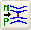

You can also use other flow boundary conditions to model special scenarios in your model:
|
Boundary condition |
Description |
|
Moving Frame of Reference |
Lets you model the effect of rotating machinery or watercraft on the surrounding fluid. For example you can use this simulation object to model rotating fans. |
|
Mixing Plane |
Lets you interface two or more fluid regions with different flow conditions. For example, you can use a Mixing Plane simulation object when you want to interface a rotating flow region with a non rotating flow region. |
|
Particle Injection |
Lets you track the location of particles injected to the fluid with specific size and mass properties. |
|
Screen |
Lets you model two dimensional openings that direct and impede the fluid flow from moving within the fluid domain. |
|
Supersonic Inlet  |
Lets you model the fluid entering the domain at velocities over Mach 1. |
|
Symmetry Plane |
Lets you define a plane about which a fluid volume is symmetrical. |